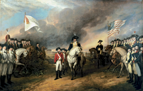

Lezione 14  Stati Uniti
Stati Uniti

Nel 1796 George Washington lasciò la presidenza degli Stati Uniti. Durante il discorso di addio alla nazione tracciò alcune linee essenziali che caratterizzarono la politica americana dei secoli successivi.
«La nostra grande regola di condotta nei confronti delle nazioni straniere dev’essere quella di estendere quanto possibile le relazioni commerciali e di diminuire invece al massimo i legami politici. Per quel che concerne gli impegni che abbiamo già contratto, adempiamoli con perfetta buona fede. Ma fermiamoci qui.
L’Europa ha una serie di interessi essenziali che con noi non hanno nessuna, o comunque solo assai remota relazione. Ne consegue che essa è trascinata in frequenti controversie le cui cause ci sono sostanzialmente estranee. Ne consegue ancora che sarebbe prova di grande mancanza di saggezza da parte nostra il lasciarci invischiare, mediante legami artificiali, nelle vicissitudini della sua politica o nelle continue combinazioni e collisioni dei suoi amici e nemici.
La nostra situazione di lontananza e di isolamento ci impone, e ci consente, di seguire una politica del tutto diversa. Se noi restiamo uniti in un solo popolo sotto un Governo efficiente, non è lontano il momento in cui saremo in grado di sfidare i danni materiali provocati da un attacco esterno; in cui potremo assumere un atteggiamento tale da far sì che la neutralità, cui potremo eventualmente risolversi, sia scrupolosamente rispettata, in cui le nazioni belligeranti, nell’impossibilità di ottenere alcunché da noi, non assumeranno leggermente il rischio di provocarci; in cui ci sarà consentito di scegliere la pace o la guerra a seconda di quanto ci suggerirà, al lume della giustizia, il nostro proprio interesse».
(Aquarone, Negri, Scelba (a cura di), La formazione degli Stati Uniti d’America. Documenti, vol. II, Nistri-Lischi, Pisa, 1961, in Salvadori, Corso di storia, L’età moderna, vol.II, Loescher, Torino, 1990)